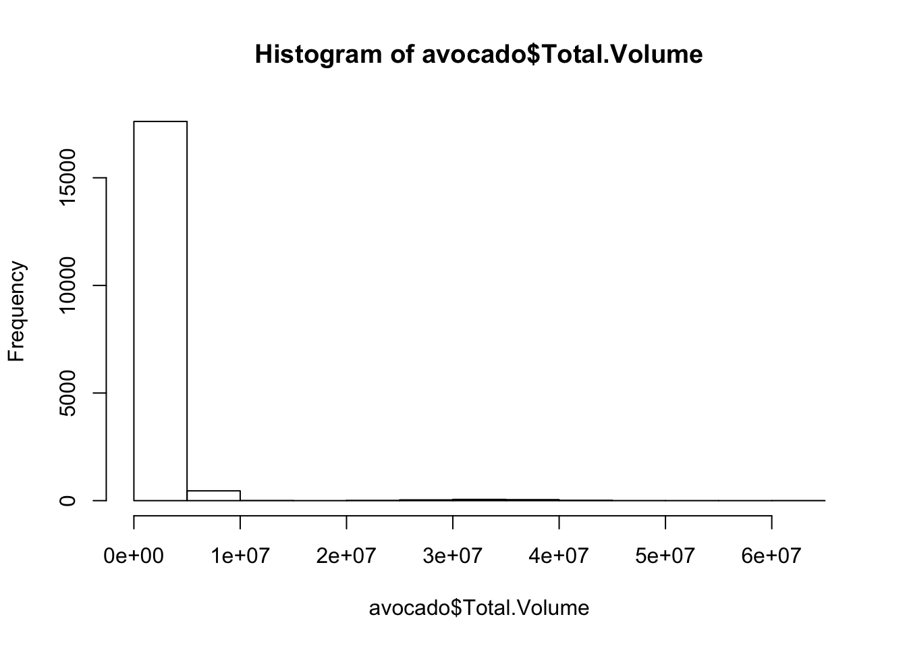
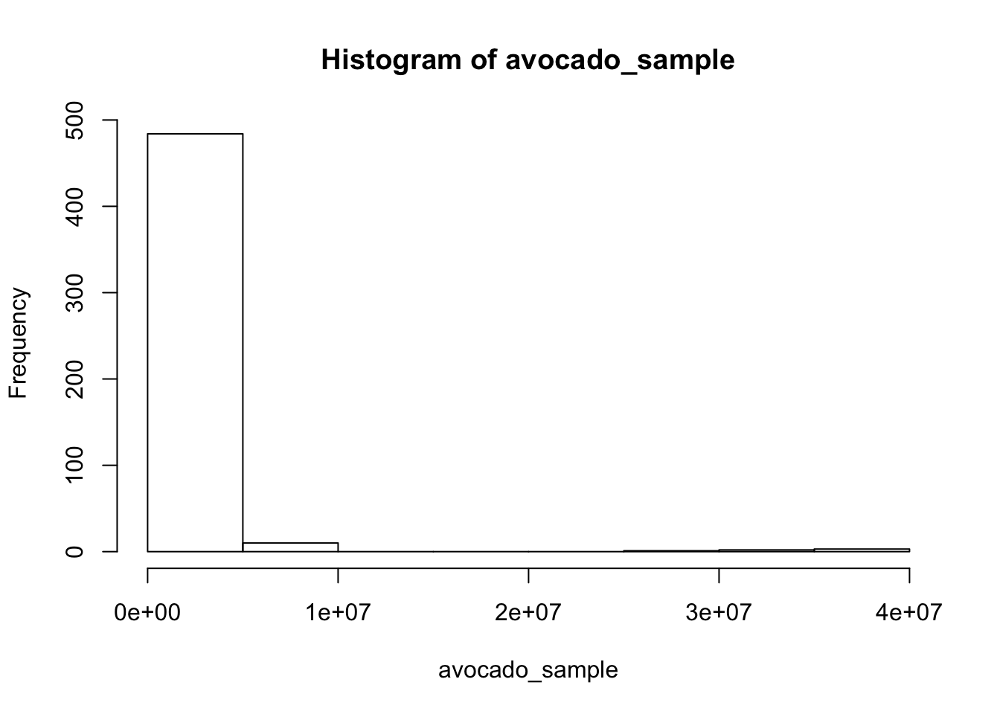
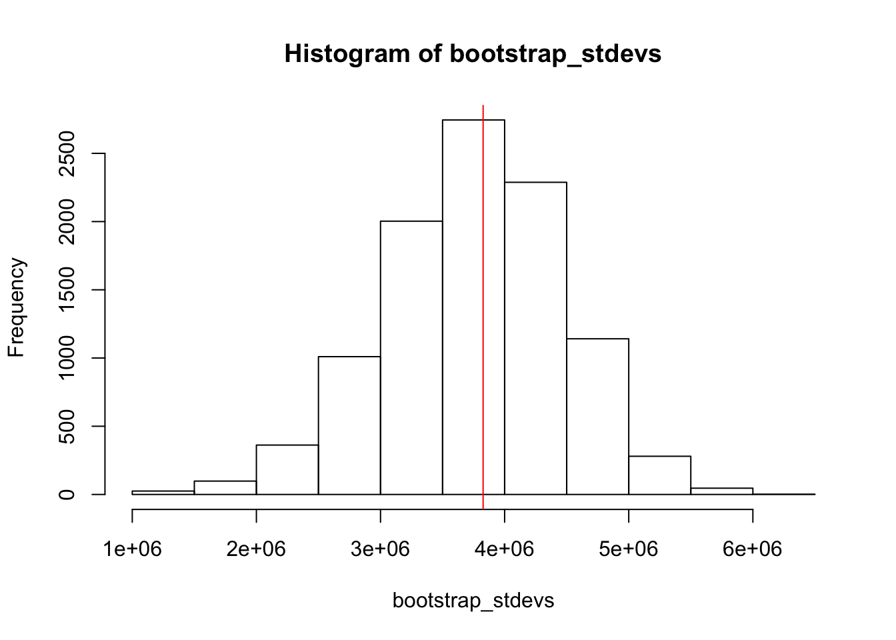
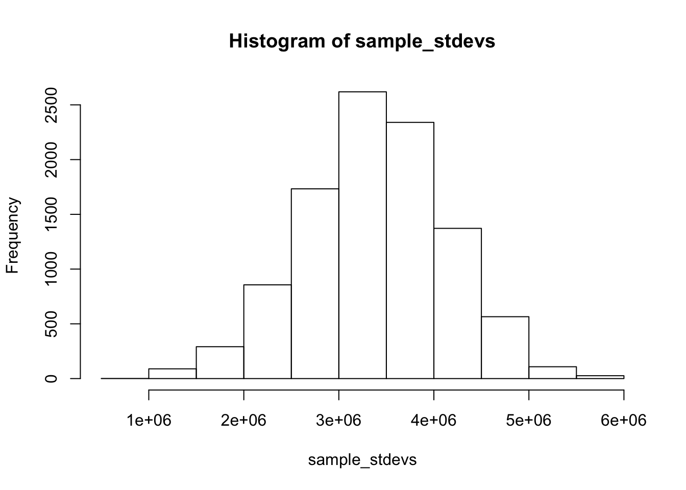
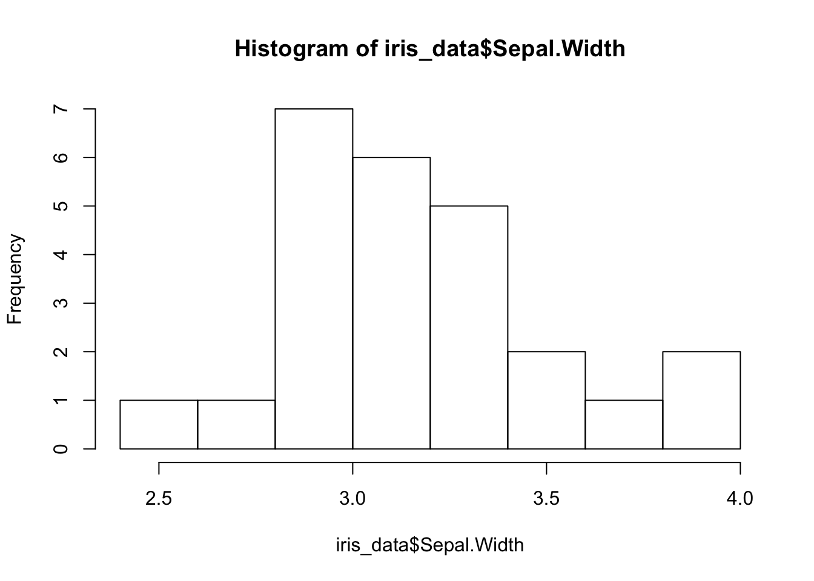
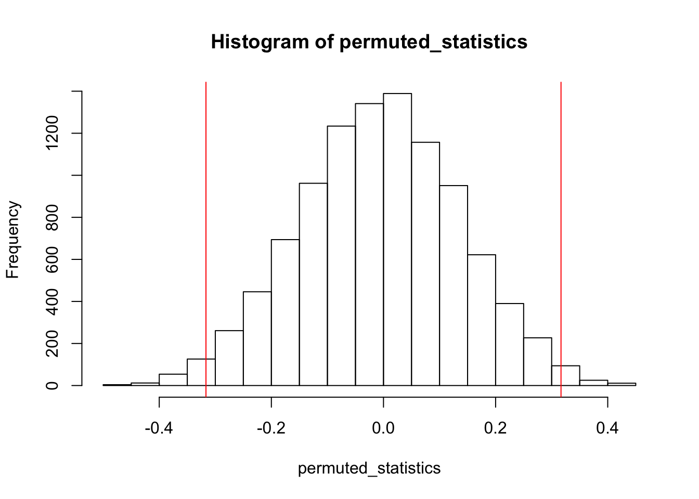
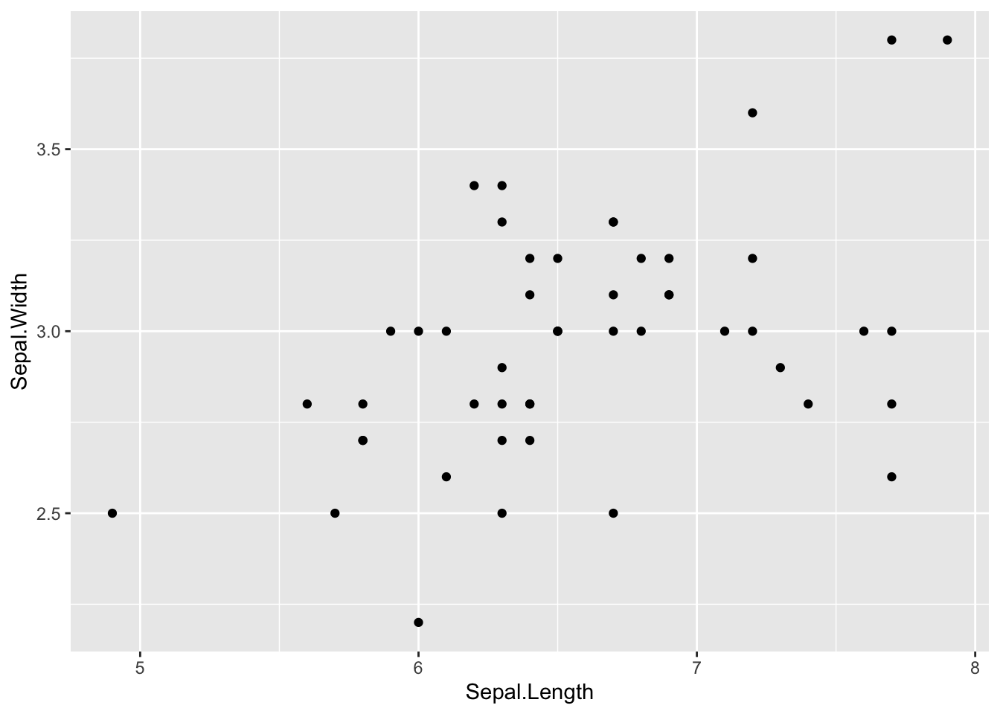

Last updated: 2020-06-22
Checks: 7 0
Knit directory: MSTPsummerstatistics/
This reproducible R Markdown analysis was created with workflowr (version 1.5.0). The Checks tab describes the reproducibility checks that were applied when the results were created. The Past versions tab lists the development history.
Great! Since the R Markdown file has been committed to the Git repository, you know the exact version of the code that produced these results.
Great job! The global environment was empty. Objects defined in the global environment can affect the analysis in your R Markdown file in unknown ways. For reproduciblity it’s best to always run the code in an empty environment.
The command set.seed(20180927) was run prior to running the code in the R Markdown file. Setting a seed ensures that any results that rely on randomness, e.g. subsampling or permutations, are reproducible.
Great job! Recording the operating system, R version, and package versions is critical for reproducibility.
Nice! There were no cached chunks for this analysis, so you can be confident that you successfully produced the results during this run.
Great job! Using relative paths to the files within your workflowr project makes it easier to run your code on other machines.
Great! You are using Git for version control. Tracking code development and connecting the code version to the results is critical for reproducibility. The version displayed above was the version of the Git repository at the time these results were generated.
Note that you need to be careful to ensure that all relevant files for the analysis have been committed to Git prior to generating the results (you can use wflow_publish or wflow_git_commit). workflowr only checks the R Markdown file, but you know if there are other scripts or data files that it depends on. Below is the status of the Git repository when the results were generated:
Ignored files:
Ignored: .DS_Store
Ignored: .RData
Ignored: .Rhistory
Ignored: .Rproj.user/
Ignored: analysis/.DS_Store
Ignored: analysis/.RData
Ignored: analysis/.Rhistory
Ignored: data/.DS_Store
Unstaged changes:
Modified: analysis/NaiveBayes.Rmd
Note that any generated files, e.g. HTML, png, CSS, etc., are not included in this status report because it is ok for generated content to have uncommitted changes.
These are the previous versions of the R Markdown and HTML files. If you’ve configured a remote Git repository (see ?wflow_git_remote), click on the hyperlinks in the table below to view them.
| File | Version | Author | Date | Message |
|---|---|---|---|---|
| html | 14c0094 | Anthony Hung | 2020-06-12 | Build site. |
| html | 1378fca | Anthony Hung | 2020-06-12 | Build site. |
| html | 9bb0ed6 | Anthony Hung | 2020-05-12 | Build site. |
| html | 2114e6c | Anthony Hung | 2020-05-10 | Build site. |
| html | 29c91df | Anthony Hung | 2020-05-10 | Build site. |
| html | a6d0787 | Anthony Hung | 2020-05-09 | Build site. |
| Rmd | b4b4e0d | Anthony Hung | 2020-05-02 | add blurb about fisher’s exact as a permutation test |
| html | 0e6b6d0 | Anthony Hung | 2020-04-30 | Build site. |
| Rmd | 20a6cfd | Anthony Hung | 2020-04-30 | add new exercise for introR |
| html | 20a6cfd | Anthony Hung | 2020-04-30 | add new exercise for introR |
| html | 4e08935 | Anthony Hung | 2020-03-30 | Build site. |
| Rmd | 058310e | Anthony Hung | 2020-03-30 | resampling lesson |
| html | 058310e | Anthony Hung | 2020-03-30 | resampling lesson |
Remember that we can think of any given random sample as independent draws from an identical underlying distribution that characterizes the population you are sampling from. However, even if we know that there is some underlying distribution that properly models the population and your data, that does not necessarily mean you can conveniently fit your data into one of the boxes of the named distributions we have discussed thus far in the course.
One such reason for this could be that there is no well-defined named distribution that fits your data well. (For example, imagine a trimodal distribution.)
Another reason could be that you simply do not have enough datapoints in your dataset for any well-defined distribution to properly fit. For example, even if you are comparing two means, sometimes the populations were unevenly sampled. Often there is no guarantee that the underlying distributions are normal with equal variances in the two populations.
Finally, maybe an empirical distribution is known that fits your data, but the computational burden required to perform inference using this empirical distribution are too high. This is particularly true for empirical distributions with very complicated parameters that need to be fit using your data.
One potential solution to problems such as these would be to use resampling methods, which leverage the information contained within a single sample to allow you to make inferences about the population without assuming an underlying distribution.
Today, we will discuss two types of resampling methods: bootstrapping and permutation tests.
Bootstrapping is used to access the reliability of an estimate by . Permutation tests are used to test hypotheses involving two or more groups.
Note: both of these resampling methods assume that your sample was properly collected (all observations are independent and randomly selected from the population). Neither can make up for improperly collected data. In other words, “garbage in, garbage out.”
Bootstrapping comes from the idea of “pulling oneself up by ones bootstraps,” a seemingly impossible feat. Similarly, the idea of generating a sample distribution from just one sample is a seemingly impossible task. Bootstrapping is commonly used to calculate the sampling distribution of a test statistic for the purposes of quantifying uncertainty about the estimate of a test statistic from sample data.
There is one sample summary statistic that you have the ability to easily calculate a sampling distribution for on without resorting to resampling? Which is this?
Bootstrapping involves taking multiple sub-samples from the original sample, of equal size to the original and with replacement, and then calculating sampling distributions of sample statistics using this new bootstrapped pool of samples. You may recall that sampling distributions allow us to show how precise we expect our estimate of a certain population statistic based on sample data to be rather than just giving us a point estimate of the population statistic.
The steps for generating a confidence interval for a statistic estimated from sample data is as follows:
Calculate your statistic of interest from your sample data.
Take a bootstrap sample - a random sample taken with replacement from the original sample, of the same size as the original sample. This means your bootstrap sample will have the same number of datapoints as your original sample, but some datapoints will be represented multiple times and others not at all.
Compute the statistic of interest from your bootstrap sample.
Repeat 2 and 3 for a large number of times and save the computed statistic for each bootstrap sample.
Find the confidence interval for your sample statistic by finding what proportion of your bootstrap statistics are as extreme or more extreme than your sample statistic.
For example, imagine you have collected data on sales of avocadoes from different regions in the US. Now you are interested in how reliable your statistics (mean, standard deviation, etc) that you have calculated from this sample are. We can perform this task using permutation tests.
First, let’s generate our sample by pulling from the avocado data (which we will call our population data). Let’s sample 500 observations of the Total.Volume column to serve as our sample. Let’s also plot its distribution.
set.seed(1234)
avocado <- read.csv('data/avocado.csv')
hist(avocado$Total.Volume)
avocado_sample <- sample(avocado$Total.Volume, size = 500)
hist(avocado_sample)
As we might expect, the distribution of the sample resembles that of the population data.
Let’s use bootstrapping to generate a bootstrap distribution for the sample standard deviation and compute a 95% confidence interval for this statistic. First, let’s compute our statistic for our sample.
stdev_sample <- sd(avocado_sample)Next, let’s generate our bootstrap distribution by generating 10,000 bootstrap samples and computing the standard deviation for each of them.
bootstrap_stdevs <- c()
for(i in 1:1E4){
bootstrap_sample <- sample(avocado_sample, replace = TRUE)
bootstrap_stdev <- sd(bootstrap_sample)
bootstrap_stdevs <- c(bootstrap_stdevs, bootstrap_stdev)
}
hist(bootstrap_stdevs)
abline(v=stdev_sample, col = 'red')
As expected, our sample standard deviation lies near the middle of our bootstrap distribution.
Finally, to compute our 95% confidence interval from the bootstrapped statistics, we just need to find the 2.5 and 97.5 percentiles of the bootstrapped statistics.
quantile(bootstrap_stdevs, c(.025, .975)) 2.5% 97.5%
2323884 5073467 The 95% confidence interval of the standard deviation is (2323884, 5073467).
Side note: although we computed 10,000 bootstrapped samples here, the confidence interval would not change meaningfully if we simulated a different number of bootstrapped samples. Specifically, although the precision of the endpoints of the confidence interval would increase with more bootstrapped samples, the magnitude of the confidence interval would not change meaningfully. We show this below with 1,000 and 100,000 bootstrapped samples.
bootstrap_stdevs <- c()
for(i in 1:1E3){
bootstrap_sample <- sample(avocado_sample, replace = TRUE)
bootstrap_stdev <- sd(bootstrap_sample)
bootstrap_stdevs <- c(bootstrap_stdevs, bootstrap_stdev)
}
quantile(bootstrap_stdevs, c(.025, .975)) 2.5% 97.5%
2317542 5047546 bootstrap_stdevs <- c()
for(i in 1:1E5){
bootstrap_sample <- sample(avocado_sample, replace = TRUE)
bootstrap_stdev <- sd(bootstrap_sample)
bootstrap_stdevs <- c(bootstrap_stdevs, bootstrap_stdev)
}
quantile(bootstrap_stdevs, c(.025, .975)) 2.5% 97.5%
2312316 5098232 Now that we have performed bootstrapping on our sample of the overall data to generate a bootstrap distribution for the standard deviation statistic, let’s show that this bootstrap distribution accurately approximates an actual sampling distribution by generating an empirical sampling distribution from the data. We can do this by taking many random samples from the original avocado population data and computing the standard deviations of each sample (how does this sampling scheme differ from what we did to generate our boostrap distribution?) We can use this sampling distribution to compute a 95% confidence interval for the standard deviation.
sample_stdevs <- c()
for(i in 1:1E4){
sample <- sample(avocado$Total.Volume, replace = FALSE, size = 500)
stdev <- sd(sample)
sample_stdevs <- c(sample_stdevs, stdev)
}
hist(sample_stdevs)
quantile(sample_stdevs, c(.025, .975)) 2.5% 97.5%
1850429 4817787 Pretty close but not a perfect match. The actual sampling distribution gives us a narrower confidence interval than the bootstrapping distribution. Why might this be the case?
Similar to bootstrapping, permutation tests generate sampling distributions by resampling the data rather than pulling from a known distribution as the sampling distribution. Permutation testing is used to perform hypothesis testing.
As with any hypothesis testing situation, the first step in permutation testing is to define your null/alternative hypotheses. These can be stated in words or as mathematical expressions.
Next, we need to define what our test statistic of interest is. Calculate this test statistic for your sample data.
After we have the above two nailed down, we next need to resample our data! In this case, we would generate many simulated datasets from our sample by permuting our sample. Specifically, this involves “scrambling” the data labels according to our null hypothesis. More on this later.
After generating these permuted samples, we would calculate the test statistic for each of these permuted datasets.
Finally, we need to get a p-value for our hypothesis test. Recall what the definition of a p-value is. Here, we calculate the p-value by finding what proportion of our permuted test statistics is as extreme or more extreme than the test statistic computed from our original data.
Hopefully, it is clear that what we are doing in permutation testing has 1 to 1 analogies to normal hypothesis testing. We first define what our null hypothesis is, and generate a sampling distribution under the assumption that the null hypothesis is true. We generate this sampling distribution by permuting our data in a way that generates samples that we would expect to see if the null hypothesis were true. After generating the sampling distribution, we find where our observation falls on the distribution and calculate a p-value (p-value = “the probability of obtaining test results at least as extreme as the results actually observed during the test, assuming that the null hypothesis is correct.”)
Imagine you were collecting flowers from two different species one day and taking measurements from them. You didn’t have much time, so you ended up collecting only 15 flowers of one species and 10 of the other. You are interested in seeing if the Sepal widths of both species are different from each other. Let’s use a permutation test to answer this question. Let’s walk through the 5 steps:
iris_data <- iris[c(1:15, 141:150),c('Species', 'Sepal.Width')]
hist(iris_data$Sepal.Width)
What is the null hypothesis here? A good one would be that the mean sepal widths of both species are equal (or equivalently, the difference between the two sepal width means is 0). Since we do not have a good reason to think either species has wider sepals than the other, we can use a two-sided alternative hypothesis.
What is our test statistic here? That would be the difference between the two mean sepal widths. Let’s calculate it for our sample (for consistency’s sake, let’s define it as mean sepal width of setosa - mean sepal width of virginica).
sample_statistic <- mean(iris_data$Sepal.Width[iris_data$Species == 'setosa']) - mean(iris_data$Sepal.Width[iris_data$Species == 'virginica'])
sample_statistic[1] 0.31666673 and 4. Generate many permuted samples by scrambling the labels of our data under the null hypothesis. Under our null hypothesis, there is no difference between the sepal widths of the two species. Therefore, the way we could permute the dataset is to erase our species column name labels, shuffle the sepal width values, and reassign them randomly to the two species (being careful to have 15 setosas and 10 virginicas in the final labels to match the number of each in our original sample).
After generating each of the permuted samples, we can compute the test statistic (mean sepal width of setosa - mean sepal width of virginica) for each of them.
#let's generate 10000 permuted samples and test statistics
widths <- iris_data$Sepal.Width
permuted_statistics <- c() #initialize empty vector to store our permuted values
for(i in 1:10000){
permuted_sample <- sample(widths) # sample without replacement from widths to shuffle the values
permuted_setosa <- permuted_sample[1:15] # label the first 15 widths setosa
permuted_viriginca <- permuted_sample[16:length(widths)] # label the rest viriginica
permuted_statistic <- mean(permuted_setosa) - mean(permuted_viriginca) # compute our permuted test statistic
permuted_statistics <- c(permuted_statistics, permuted_statistic) # add the permuted test statistic to our vector
}hist(permuted_statistics)
abline(v=c(sample_statistic, -sample_statistic), col = 'red')
# calculate the p-value
sum(permuted_statistics >= sample_statistic | permuted_statistics <= -sample_statistic) / length(permuted_statistics)[1] 0.0266It looks like with a p-value of 0.0278, there is a significant difference in the widths of the sepals between these two species!
Note: We probably could have used a t-test here since we were comparing two means, but the same procedure here could be used to perform hypothesis tests on a number of test statistics that are not means.
Both bootstrapping and permutation testing leverage sample data and do not assume an underlying distribution for the data (i.e. they are ‘non-parametric’ statistics).
The primary difference is that while bootstrapping usually is used to build a sampling distribution of some statistic computed from the data (to come up with confidence intervals, for example), permutation analyses typically seek to quantify the null distribution (for hypothesis testing, for example). Therefore, permutation testing relies on breaking up the labels attached to data points in a sample to generate what the sample would look like if pulled from a null distribution.
Both methods rely on the fact that your sample is a good representation of the population. Any biases in your sample will be reflected in your conclusions even after resampling!
Total.Bags in the avocado dataset.head(avocado$Total.Bags)[1] 8696.87 9505.56 8145.35 5811.16 6183.95 6683.91Now imagine that you were interested in seeing if the above test statistic is different for Total.Bags between avocadoes sold in 2015 vs those sold in 2016. Walk through the steps for performing a permutation test for this problem.
Permutation tests are also extremely useful in th context of determining if the correlation or dependency between two distributions is significant. Let’s examine the iris dataset, specifically the correlation between sepal length and width in the species virginica. Use a permutation test to determine whether the measured pearson correlation of 0.457 is significant. How should you permute your samples? Hint:
library(dplyr)
Attaching package: 'dplyr'The following objects are masked from 'package:stats':
filter, lagThe following objects are masked from 'package:base':
intersect, setdiff, setequal, unionlibrary(ggplot2)
iris %>% filter(Species == "virginica") %>%
ggplot(aes(x = Sepal.Length, y = Sepal.Width)) +
geom_point()
| Version | Author | Date |
|---|---|---|
| 20a6cfd | Anthony Hung | 2020-04-30 |
cor(iris[iris$Species == 'virginica',]$Sepal.Length, iris[iris$Species == 'virginica',]$Sepal.Width, method = "pearson")[1] 0.4572278Fisher’s exact test is an example of a permutation test (used in the same situations where one could use a Chi square test). It actually is more accurate than a Chi-sq test, as a Chi-sq test assumes a continuous distribution to the data (which can never truly be exactly fit to any finite dataset). However, Fisher’s exact test is exact because it exhaustively computes every single possible permutation (rather than simply a large number of them like we have done above), meaning for large sample sizes it becomes computationally burdensome to carry this test out. In school, I was taught as a rule of thumb that you can use the Chi-sq test when the expected values of each of the cells in your data table are at least 5, but this is a remnant of the days when statistics were done by hand. With the processing power available to researchers nowadays, one could reasonably apply Fisher’s exact test to larger and larger sample sizes (though at that point, both methods will be functionally equivalent in most circumstances anyways).
sessionInfo()R version 3.6.3 (2020-02-29)
Platform: x86_64-apple-darwin15.6.0 (64-bit)
Running under: macOS Catalina 10.15.5
Matrix products: default
BLAS: /Library/Frameworks/R.framework/Versions/3.6/Resources/lib/libRblas.0.dylib
LAPACK: /Library/Frameworks/R.framework/Versions/3.6/Resources/lib/libRlapack.dylib
locale:
[1] en_US.UTF-8/en_US.UTF-8/en_US.UTF-8/C/en_US.UTF-8/en_US.UTF-8
attached base packages:
[1] stats graphics grDevices utils datasets methods base
other attached packages:
[1] ggplot2_3.3.0 dplyr_0.8.5 workflowr_1.5.0
loaded via a namespace (and not attached):
[1] Rcpp_1.0.4.6 compiler_3.6.3 pillar_1.4.3 later_1.0.0
[5] git2r_0.26.1 tools_3.6.3 digest_0.6.25 evaluate_0.14
[9] tibble_3.0.1 lifecycle_0.2.0 gtable_0.3.0 pkgconfig_2.0.3
[13] rlang_0.4.5 yaml_2.2.1 xfun_0.12 withr_2.1.2
[17] stringr_1.4.0 knitr_1.26 fs_1.3.1 vctrs_0.2.4
[21] rprojroot_1.3-2 grid_3.6.3 tidyselect_1.0.0 glue_1.4.0
[25] R6_2.4.1 rmarkdown_1.18 farver_2.0.3 purrr_0.3.4
[29] magrittr_1.5 whisker_0.4 backports_1.1.6 scales_1.1.0
[33] promises_1.1.0 ellipsis_0.3.0 htmltools_0.4.0 assertthat_0.2.1
[37] colorspace_1.4-1 httpuv_1.5.2 labeling_0.3 stringi_1.4.5
[41] munsell_0.5.0 crayon_1.3.4